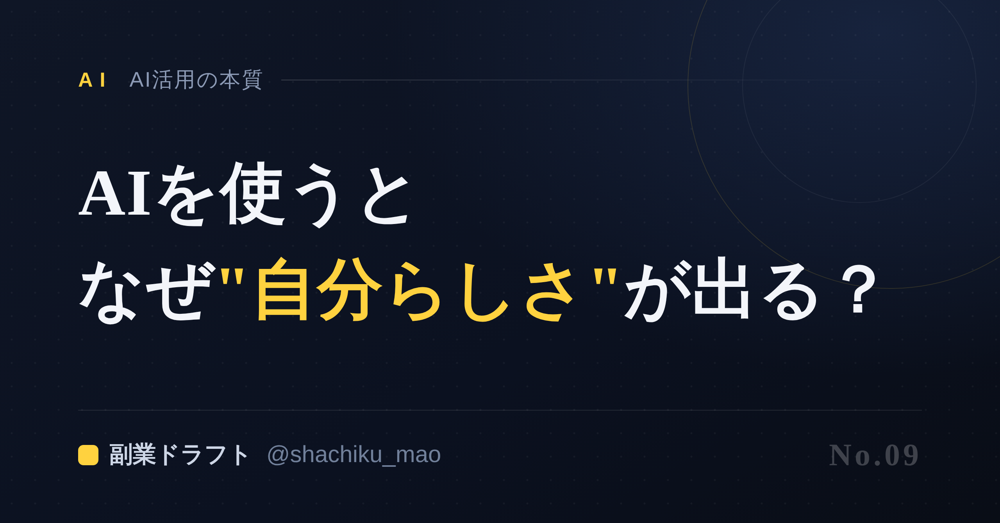
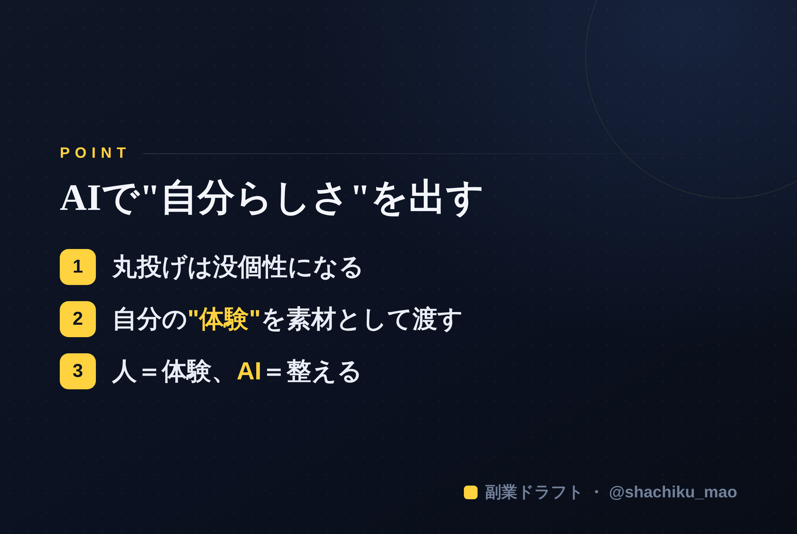

使い方
1. 「タイトルをコピー」→ note のタイトル欄に貼る
2. オレンジのラベルの画像（見出し画像）を note の見出し画像に設定
3. 「本文1をコピー」→ note本文に貼る
4. 青いラベルの位置（本文の途中）に、同じ名前の画像をアップして挿入
5. 「本文2をコピー」→ 続きを貼る
※ 見出しが普通の文字になったら、その行を選んで「大見出し」に設定してください
1. 「タイトルをコピー」→ note のタイトル欄に貼る
2. オレンジのラベルの画像（見出し画像）を note の見出し画像に設定
3. 「本文1をコピー」→ note本文に貼る
4. 青いラベルの位置（本文の途中）に、同じ名前の画像をアップして挿入
5. 「本文2をコピー」→ 続きを貼る
※ 見出しが普通の文字になったら、その行を選んで「大見出し」に設定してください
副業のネタ出しにAIを使うと、なぜ"自分らしさ"が出るのか
見出し画像に設定：note-09.png

「AIを使うと、みんな同じような文章になって没個性になる」
そう思っている人は多い。でも実際は逆でした。正しく使うと、AIはあなたの"自分らしさ"を引き出す道具になります。今日はその理由を、体験を交えてお話しします。
「AI＝没個性」になる使い方
たしかに、没個性になる使い方があります。それは——「〇〇について投稿を書いて」と丸投げする使い方。
これだと、AIは世間の平均的な情報から、当たり障りのない一般論を返します。誰が使っても似た結果になる。これが「AIは没個性」と言われる正体です。
「自分らしさ」が出る使い方
一方、自分らしさが出る使い方はこう。AIに"あなたのこと"を引き出させてから書かせる。
- あなたの過去の経験
- 実際にあったエピソード
- 現場でしか分からない気づき
- あなたの口ぐせや価値観
これらをAIが質問で引き出し、それを素材に投稿を作る。すると、他の誰にも書けない、あなただけの文章になります。同じテーマでも、素材が違えば結果はまったく変わるのです。
大事なのは「素材」
料理と同じです。同じレシピ（AI）でも、素材（あなたの体験）が違えば、まったく違う一皿になる。
「AIっぽい」投稿は、素材を渡していないだけ。あなたという素材をきちんと入れれば、AIは"あなたらしさを速く形にする"最強の相棒になります。
人がやること・AIがやること
- 人：自分の体験・想いという"素材"を出す、最後に自分の言葉で微調整する
- AI：素材を引き出す質問をする、構成を整える、複数パターンを高速で作る
この分担が、忙しい会社員が"自分らしく・速く"発信する現実的な形です。
本文中に挿入：note-09-body.png（この記事のポイント）

まさにこの「あなたを質問で引き出してから作る」を実現したのが 「副業ドラフト」 です。丸投げではなく、あなたの体験を素材にするから、AIっぽくならない。無料で試せます。
👉 https://note-threadssf.onrender.com
AIは、あなたを消す道具じゃない。あなたを速く形にする道具です。